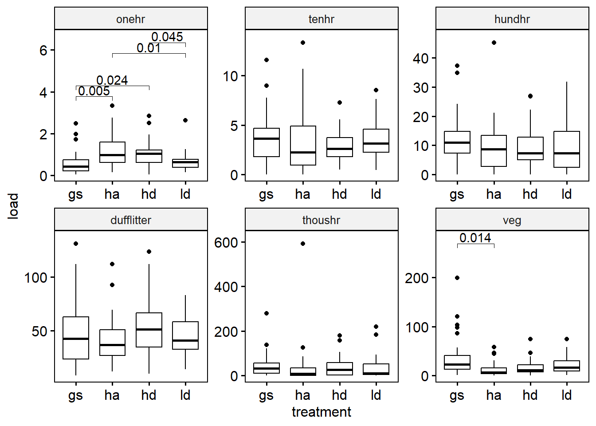
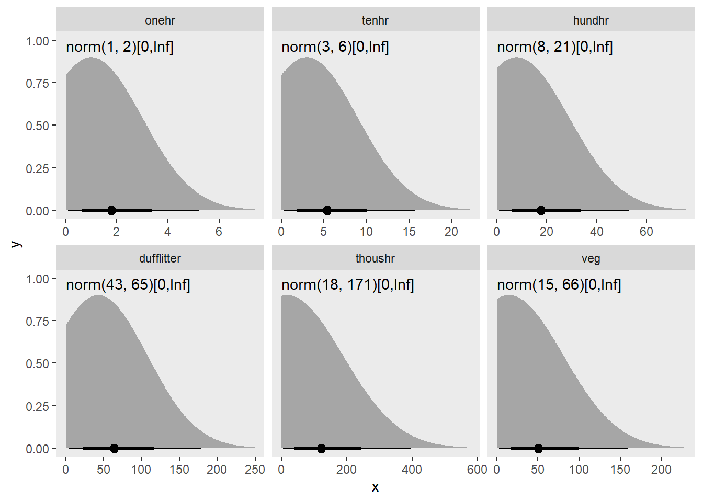
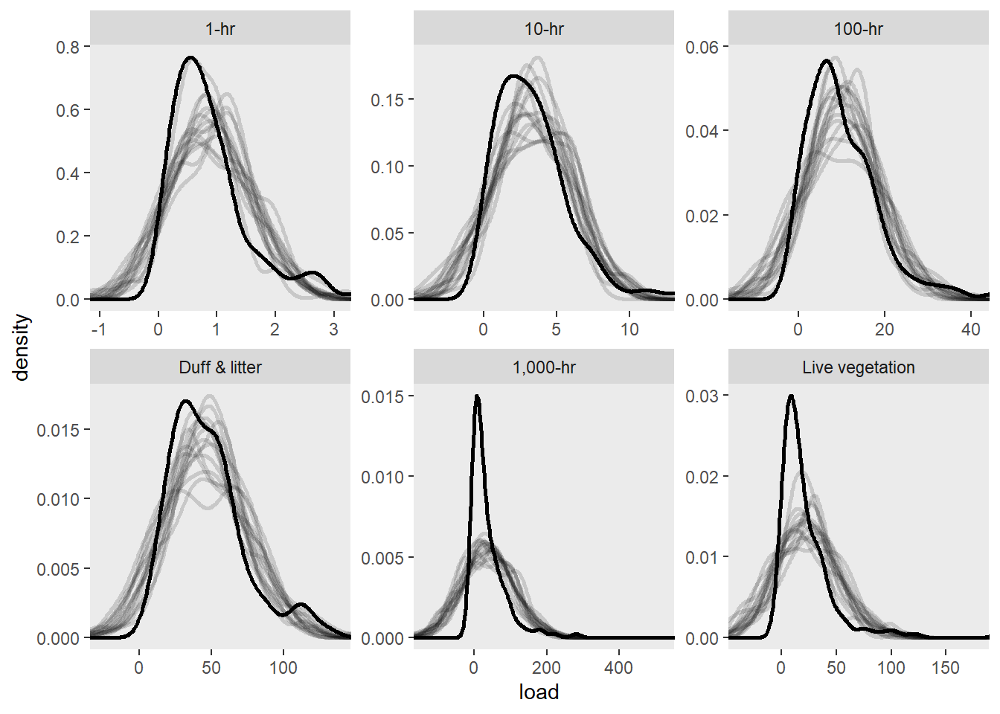
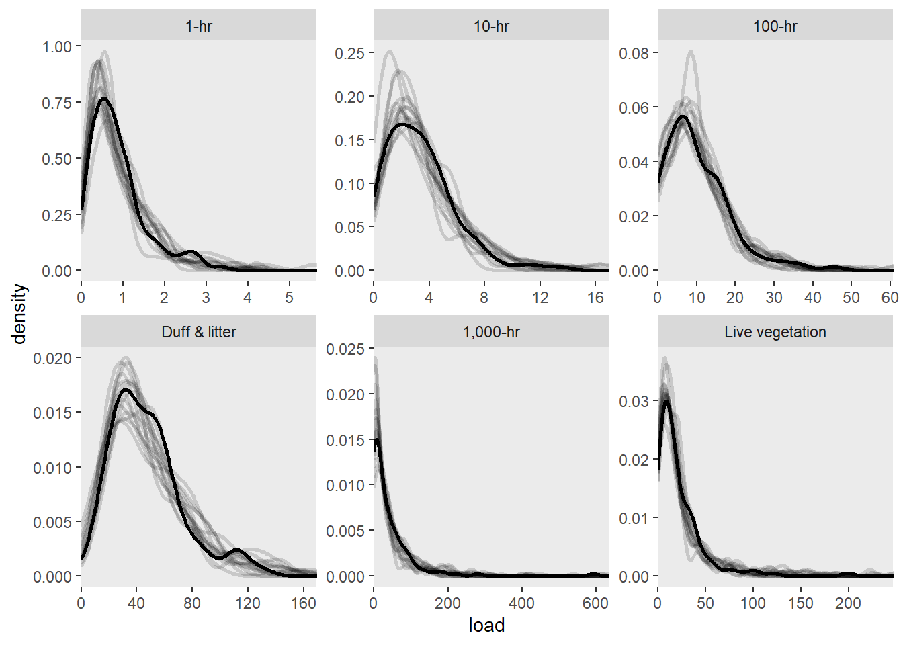

The often recommended Pillai’s Trace Test is robust to the normality assumption. Follow up with linear discriminant analysis, or multiple one-way anovas dependidng on research question. Using a Bonferroni correction for rejecting the null of alpha / m, for m hypothesis, we get an alpha of 0.008 for an alpha of 0.05 and 6 tests.
This suggests that it is unlikely that all treatemnts are equal.
One way anova (using the welch test) can either assume constant variance or not. A levene test (using median) indicates onehr, tenhr, and veg may all have different variances between groups.
The one-way anova test results are the same though between equal and unequal variance assumptions. These tests support the notion that we can’t assume that the mean vegetatvie and onehr fuel loading are equal across all treatments, but there isn’t such evidence for the other fuel loading classes.
Table 5.1: Levene tests suggest that variances are unequal across treatments for all fuel loading classes. Welches tests suggest that veg and onehr fuels may have different means among treatments.
class
levene
welch_uneq_var
welch_eq_var
onehr
0.043
0.001
0.000
tenhr
0.020
0.491
0.596
hundhr
0.937
0.648
0.636
dufflitter
0.118
0.152
0.136
thoushr
0.955
0.919
0.955
veg
0.006
0.010
0.001
We can use the Games Howell test for pairwise comparisons to follow up on the welches test for differences between means when there is unequal variance among groups. These p-values provide evidence that for onehr fuels, the mean value of ha is greater than gs and ld, and the mean value for hd is also greater than gs and ld. Also, for vegetation, gs is greater than ha only. While this test is robust to the assumptions of normality, some of our data is highly skewed. Also, because of the nesting of our data, observations are not independent, so our effective sample size is not what is assumed by this test.
gh_test <- d |> rstatix::games_howell_test(load ~ treatment) |>filter(p.adj.signif !="ns") |> rstatix::add_y_position(scales ="free", step.increase =0.5)ggpubr::ggboxplot(d, x ="treatment", y ="load", facet.by ="class") +facet_wrap(~class, scales ="free") +ggpubr::stat_pvalue_manual(gh_test, label ="p.adj") +scale_y_continuous(expand =expansion(mult =c(0.05, 0.1)))

Figure 5.1: pair-wise tests using Games-Howell, for unequal variances across groups. This shows many statistically significant differences, but the assumption of independence, which is likely to have a significant effect on our effective sample size.
5.3 Multi-level model
We have transects nested within plot corners, corners nested within plots, and plots nested within sites. We would like to detect a treatment effect, while accounting for the non-independence of this nested data structure. The following model, I believe, captures this grouping structure.
form <- load ~ treatment + (1| site/treatment/corner)
This will estimate a group-wise intercept adjustments for each site, plot, and corner, based on modeled variances for each of these grouping levels.
d <-load2("long", site, treatment, corner, all_of(load_vars)) |>group_by(class)m1 <- d |>nest() |>rowwise() |>transmute(mod =list(lme4::lmer(form, data = data)),emmeans =list(emmeans::emmeans(mod, "treatment")),pairs =list(as_tibble(pairs(emmeans, infer =TRUE))) )
boundary (singular) fit: see help('isSingular')
boundary (singular) fit: see help('isSingular')
boundary (singular) fit: see help('isSingular')
boundary (singular) fit: see help('isSingular')
Pairwise comparisons with Tukey adjustment for each of 6 multilevel models representing different fuel loading classes reveals that the only evidence for differences in means among treatments is with vegetation between the gs and ha treatments. Another sizeable difference in means is between gs and ha for the onehr fuels (Figure 5.2).
Table 5.2: Pairwise comparisons among treatments with p-values < 0.05 for 6 multilevel models. Only Veg, gs-ha comparison is statistically significant.
Figure 5.2: 95% confidence intervals and pairwise comparisons of means for 6 mixed models representing different fuel loading classes using package emmeans.
Hypothesis testing with multi-level models is not as straight forward with multi-level models. The problem, explained here is two fold. For GLMMs and unbalanced experimental designs, the null distribution for the F-statistic may not be F-distributed.
For us, we have a balanced design (I think) and so the F-statistic should be F distributed and degrees of freedom should be clear from the details of the design. Because of our balanced design, the Kenward-Rogers approach and “inner-outer” design approach (which is used by nlme::lme) give the same result of 9.
Using the package pbkrtest we can get parametric bootstrap liklihood ratio statistics and test this statistic in a number of different ways. The PBtest should probably be the most reliable, but I’ve included descriptions of the others from the package documentation for reference. I’m also including an F-test in which degrees of freedom are estimated with Kenward-Rogers approach.
LRT
Assuming that LRT has a chi-square distribution.
PBtest
The fraction of simulated LRT-values that are larger or equal to the observed LRT value.
Bartlett
A Bartlett correction is of LRT is calculated from the mean of the simulated LRT-values
Gamma
The reference distribution of LRT is assumed to be a gamma distribution with mean and variance determined as the sample mean and sample variance of the simulated LRT-values.
F
The LRT divided by the number of degrees of freedom is assumed to be F-distributed, where the denominator degrees of freedom are determined by matching the first moment of the reference distribution.
Table 5.3: Liklihood ratio tests and parametric boot strap tests of model significance: whether the model with treatment, fits the data better than the intercept only model (adjusting for nesting structure).
class
test
stat
df
ddf
F.scaling
p.value
onehr
LRT
7.48
3
NA
NA
0.0580
onehr
PBtest
7.48
NA
NA
NA
0.1608
tenhr
LRT
0.77
3
NA
NA
0.8576
tenhr
PBtest
0.77
NA
NA
NA
0.8942
hundhr
LRT
0.70
3
NA
NA
0.8725
hundhr
PBtest
0.70
NA
NA
NA
0.9201
dufflitter
LRT
6.05
3
NA
NA
0.1093
dufflitter
PBtest
6.05
NA
NA
NA
0.1129
thoushr
LRT
0.22
3
NA
NA
0.9739
thoushr
PBtest
0.22
NA
NA
NA
0.9747
veg
LRT
11.70
3
NA
NA
0.0085
veg
PBtest
11.70
NA
NA
NA
0.0380
5.4 Model checking
Taking a look at residual vs. fitted and qqplots of the model, it looks like our residuals are not normally distributed and there is not constant variance.
Code
# These are functions to plot for each model, residuals vs fitted and normal# quantiles. The third function is a wrapper to do both.resid_plot <-function(data) { data |>ggplot(aes(fitted, resid)) +geom_point() +facet_wrap(~class, scales ="free") +geom_hline(yintercept =0)}qq_plot <-function(data) { data |>ggplot(aes(sample = resid)) +stat_qq() +stat_qq_line() +facet_wrap(~class, scales ="free")}resid_qq_plot <-function(data) { data <-unnest(data, c(resid, fitted))list(a =resid_plot(data),b =qq_plot(data) )}d <-load2("long", all_of(c(transectid, load_vars))) |>group_by(class) |>nest() |>rowwise()
form <- load ~ treatment + (1| site/treatment/corner)mod1 <- d |>mutate(mod =list(lme4::lmer(form, data)),fitted =list(fitted(mod)),resid =list(resid(mod, type ="pearson", scaled =TRUE)),.keep ="unused" )
boundary (singular) fit: see help('isSingular')
boundary (singular) fit: see help('isSingular')
boundary (singular) fit: see help('isSingular')
boundary (singular) fit: see help('isSingular')
Figure 5.3: Residual vs fitted and normal quantile-quantile plots for a multi-level model with un-pooled treatment intercepts and partially pooled (random effects) for nested data. Fit using lme4 The residuals are not homogenous.
I’ll try to control the variance by refitting the model with nlme::lme and using the weights argument. I’ll be using the pearson residuals which are corrected for heteroscedasticity.
I had to use the control argument sigma = 1 for the model to fit. I’m not sure why, I read it in the documentation for nlme::varConstProp. I’m modeling variance as a constant proportion of the fitted values of the model. This seems to have cleaned up the variance.
Figure 5.4: Same as Figure 5.3 but variance is modeled as a function fitted values, assuming a linear relationship. Fit with nlme. The (scaled) residuals are more homogenous now.
I’ll compare AIC of the two models to see if one performs better than the other.
first, I want to see if the models produced by lme and lmer are equivalent
boundary (singular) fit: see help('isSingular')
boundary (singular) fit: see help('isSingular')
boundary (singular) fit: see help('isSingular')
boundary (singular) fit: see help('isSingular')
# A tibble: 48 × 9
class model effect term estimate std.error statistic df p.value
<fct> <chr> <chr> <chr> <dbl> <dbl> <dbl> <dbl> <dbl>
1 onehr mod1 fixed (Intercept) 0.598 0.191 3.13 NA NA
2 onehr mod2 fixed (Intercept) 0.598 0.191 3.13 64 0.00265
3 onehr mod1 fixed treatmentha 0.603 0.256 2.35 NA NA
4 onehr mod2 fixed treatmentha 0.603 0.256 2.35 9 0.0433
5 onehr mod1 fixed treatmenthd 0.439 0.256 1.71 NA NA
6 onehr mod2 fixed treatmenthd 0.439 0.256 1.71 9 0.121
7 onehr mod1 fixed treatmentld 0.0697 0.256 0.272 NA NA
8 onehr mod2 fixed treatmentld 0.0697 0.256 0.272 9 0.792
9 tenhr mod1 fixed (Intercept) 3.75 0.784 4.78 NA NA
10 tenhr mod2 fixed (Intercept) 3.75 0.784 4.78 64 0.0000106
# ℹ 38 more rows
they seem equivalent enough, although the random effects variances estimated by lmer are somewhat smaller. Now, lets compare the two lme models. I’m fitting with REML because I’m not changing the fixed effects structure.
Table 5.4: Pairwise comparisons among treatments with p-values < 0.05 for 6 multilevel models using a model with variance modeled as a linear relationsihp with the fitted value.
Figure 5.5: 95% confidence intervals and pairwise comparisons of means for 6 mixed models representing different fuel loading classes using a model with variance modeled as a linear relationsihp with the fitted value.
No, it doesn’t seem to make much of a difference.
5.5 Other random effects structures
I’m not sure I’m using the correct random effects specification. The somewhat confusing thing is that I have a random effects nested above and below my fixed effect. This means that when I specify my random effect using the nesting notation: 1 | site/treatment/corner, I’m estimating a variance for corner:treatment:site, treatment:site, and site. The interaction of treatment and site here is analagous to a plot effect, of which there are 16.
5.6 Bayesian mode
I’ll use mostly brms defaults (notably, priors, which is not recommended) to do a basic bayesian analysis, using the same formula I used for the lmm above:
5.6.1 Data
All the data is nested to facilitate modeling each fuel class separately. We’ll look at the average loading to get an idea of the data.
d <-load2("long", all_of(c(transectid, load_vars))) |>group_by(class) |>nest() |>rowwise()
5.6.2 Model formula
We’re modeling intercepts for each treatment seperately with no baseline intercept. The partilly pooled interecepts (site/treatment/corner) are based on the way the data was collected. Transects within corners, corners within plots (combination of site and treatment) and plots within sites.
form <- load ~ treatment -1+ (1| site/treatment/corner)
5.6.3 Priors
We are using mostly uninformative priors for our un-pooled (fixed) estimates of treatment intercepts. They are all set as normal distributions, centered at the median of the fuel load with a sd of 2.5 times the sd of the data. They are contrained to be positive, as it’s not possible to have a negative fuel load.
# add calcualted priors to the datad <-mutate(d, priors =list(brms::set_prior(str_glue("normal( {round(median(data$load))}, {round(2.5 * sd(data$load))} )"), lb =0 )))# Plot the priorsd |>mutate(prior_dist =list(select(tidybayes::parse_dist(priors), .dist_obj)) ) |>unnest(prior_dist) |>ggplot(aes(xdist = .dist_obj)) + tidybayes::stat_halfeye(normalize ="panels") +geom_text(aes(label =format(.dist_obj), x =0, y =0.97, hjust =0)) +facet_wrap(~ class, scales ="free_x")

Figure 5.6: Normal priors centered at the median and sd of 2.5 times the sd of the data
Warning: Using `size` aesthetic for lines was deprecated in ggplot2 3.4.0.
ℹ Please use `linewidth` instead.
Adding missing grouping variables: `class`

Figure 5.7: Density of the observed data (y) plotted against 10 random draws from the posterior predictive distribution.
The Gaussian distribution is symmetric and doesn’t capture well the peak near zero and the long right tail of our observed values for most of the fuel classes. It also dramatically overpredicts negative values (which are absent from our data, despite the fact that the density smoothing of the observed values seems to suggest there are some.)
The fact that the model predicts negative values suggests that it is not right for our data, and could potentially be biasing comparissons between treatments. A Gamma distribution for the response makes more sense.
5.6.6 Gamma model
First I’ll set my prior. This is complicated because we are now working with a log link. According to Solomon Kurz, [this is how] to transform your mean and sd for a normal distribution on the identity scale, to the equivalent normal distribution on the log scale.
d <-load2("long", all_of(c(transectid, load_vars))) |>group_by(class) |>nest() |>rowwise()mu_sigma_lognorm_prior <-function(data) {# Desired values m <-mean(data) s <-2.5*sd(data)# use the equations mu <-log(m /sqrt(s^2/ m^2+1)) sigma <-sqrt(log(s^2/ m^2+1))# output a prior stringsprintf("normal(%.4f, %.4f)", mu, sigma)}
# add calcualted priors to the datad <-mutate(d, priors =list(brms::set_prior(mu_sigma_lognorm_prior(data$load) )))# Plot the priorsd |>mutate(prior_dist =list(select(tidybayes::parse_dist(paste0("log", priors)), .dist_obj) ),lims =list(tibble(xmin =0, xmax =quantile(prior_dist$.dist_obj, .995)) ) ) |>unnest(prior_dist) |>ggplot(aes(xdist = .dist_obj)) + tidybayes::stat_halfeye(normalize ="panels") +geom_text(aes(label =format(.dist_obj), x =0, y =0.97, hjust =0)) +facet_wrap(~ class, scales ="free_x")
The model fit without convergence problems. I used the same priors as before, but with a hurdle gamma response. This fits one model for the zeros and another for the non-zero values, which are expected to be gamma distributed, that is, positive and right skewed.
5.6.7 Posterior Predictive check (Gamma)
posterior_predictive_check(bf3)
Adding missing grouping variables: `class`

Figure 5.9: Density of the observed data (y) plotted against 10 random draws from the posterior predictive distribution.
The gamma model fits the data better. There are no predictions below zero anymore. It does seem like the gamma distribution tends to predict higher densities of lower values than we observed, as seen in the plots for the tenhr, thoushr, and veg fuel classes. But generally, the predictions appear to agree with the observed data pretty well.
5.7 Expected value of the posterior predictive
# get posterior predictions for treatments, ignoring random effects. These are# predictions for the expected value across all sites.predict_posterior_expected <-function(data, plot =TRUE) { newdata <-expand(data$data[[1]], nesting(treatment)) data <-mutate(data,pred =list( tidybayes::epred_draws(mod, newdata, re_formula =NA, value ="pred") ),lims =list(tibble(xmin =0, xmax =quantile(pred$pred, .995)) ) )if (plot) { p <- data |>unnest(pred) |>ggplot(aes(pred, treatment)) + tidybayes::stat_halfeye(normalize ="panels") +facet_wrap(~class, scales ="free_x") +coord_cartesian_panels(panel_limits =unnest(select(data, lims), lims))print(p) }invisible(data)}
Figure 5.10: Posterior expected predictions, with no random effects. This reprsents the expected average conditions across all sites. The point estimate is the mode. Units are mg ha-1. Upper and lower limits are the 95% credible intervals.
These are the expected predictions, or predictions for the mean. It only includes the uncertainty in the mean and not the variance in predictions estimated by the model.
There is quite a bit of uncertainty about the mean all around, but there is a notable difference in that uncertainty among treatments for the onehr and veg fuel classes.
Table Table 5.5 shows these data in a tabular format. I’m using the highest density continuous interval because, while its hard to see in Figure 5.10, the highest desity region is actually slightly discontinuous.
Table 5.6: Posterior expected predictions of pairwise differences in means, with no random effects. This reprsents the expected average conditions across all sites. Units are Mg ha-1. The point estimate is the mode. Upper and lower limits are the 95% credible intervals. Prob is the probability that the predicted difference matches the sign of its median–the probability that it is not zero.
class
contrast
prediction
lower
upper
prob
onehr
ha - gs
0.53
-0.02
1.17
0.98
onehr
hd - gs
0.35
-0.10
0.95
0.96
onehr
hd - ha
-0.05
-0.87
0.51
0.71
onehr
ld - gs
0.08
-0.28
0.47
0.73
onehr
ld - ha
-0.40
-1.11
0.08
0.97
onehr
ld - hd
-0.27
-0.81
0.20
0.91
tenhr
ha - gs
-0.77
-3.12
1.48
0.75
tenhr
hd - gs
-0.77
-3.02
1.36
0.81
tenhr
hd - ha
-0.09
-2.05
1.78
0.58
tenhr
ld - gs
-0.41
-2.87
1.71
0.71
tenhr
ld - ha
0.14
-1.91
2.19
0.56
tenhr
ld - hd
0.17
-1.55
2.36
0.65
hundhr
ha - gs
-1.71
-7.15
3.26
0.82
hundhr
hd - gs
-1.79
-7.45
2.77
0.83
hundhr
hd - ha
0.14
-4.50
4.93
0.51
hundhr
ld - gs
-0.64
-6.43
4.89
0.67
hundhr
ld - ha
0.61
-3.95
6.04
0.68
hundhr
ld - hd
0.68
-3.55
6.28
0.70
dufflitter
ha - gs
-4.85
-20.47
5.90
0.88
dufflitter
hd - gs
5.75
-9.50
20.98
0.81
dufflitter
hd - ha
14.28
-0.79
28.49
0.97
dufflitter
ld - gs
-2.38
-16.35
11.85
0.62
dufflitter
ld - ha
5.10
-7.48
18.21
0.79
dufflitter
ld - hd
-6.42
-23.84
6.17
0.88
thoushr
ha - gs
-7.37
-51.99
21.88
0.80
thoushr
hd - gs
0.59
-47.32
38.48
0.56
thoushr
hd - ha
6.78
-24.90
43.70
0.76
thoushr
ld - gs
-6.27
-53.07
20.69
0.82
thoushr
ld - ha
-0.27
-29.33
25.61
0.53
thoushr
ld - hd
-5.81
-45.92
23.30
0.78
veg
ha - gs
-12.45
-34.62
-0.82
0.99
veg
hd - gs
-8.03
-30.07
6.98
0.92
veg
hd - ha
4.22
-5.27
17.25
0.87
veg
ld - gs
-4.54
-28.66
10.10
0.82
veg
ld - ha
6.39
-3.10
22.64
0.94
veg
ld - hd
1.86
-11.26
17.58
0.70
6 TODO:
Is there a problem with mispecification of the model (predicting negative loading values for individual transects) if we are just wanting to compare treatments?
How do we interpret ICC when there are several grouping levels? What can we say about variance partitioning given our model?
How do we interpret the estimated sd of our grouping levels for our model?
How do we interpret sigma for the liklihood distribution?
In a posterior predictive check, do we use the expected value of the prediciton, or individual predictions (including residual variance (i think))?
How different are the predictions between the Gaussian and the Gamma model?